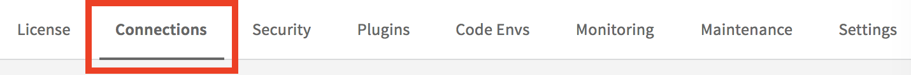
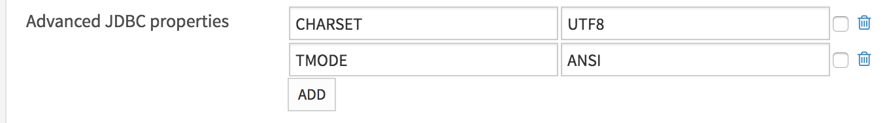

III. Creating a Teradata Connection
Teradata is supported by the DataIku DSS, although there are some additional details needed when setting up the Teradata Connection
.
In the Dataiku DSS home page, click on Admin Tools (gear icon). Alternatively, you can go to http://dataikuhost:port/admin/.

In the DSS settings page, Connections tab, Click on NEW CONNECTION. From the options that will be presented, choose Teradata.
Fill up the following fields as appropriate:
Host: Teradata Database Host
User: Username of the user
Password: Password of the user.
Default database: Preferred default database
Host: Teradata Database HostClick on the “Add” button under Advanced properties and add two (2) new properties
CHARSET: UTF8
MODE: ANSI or TERA.Click on Test button to verify that connection details provided in the previous steps are valid.
Finally, click on Save button.